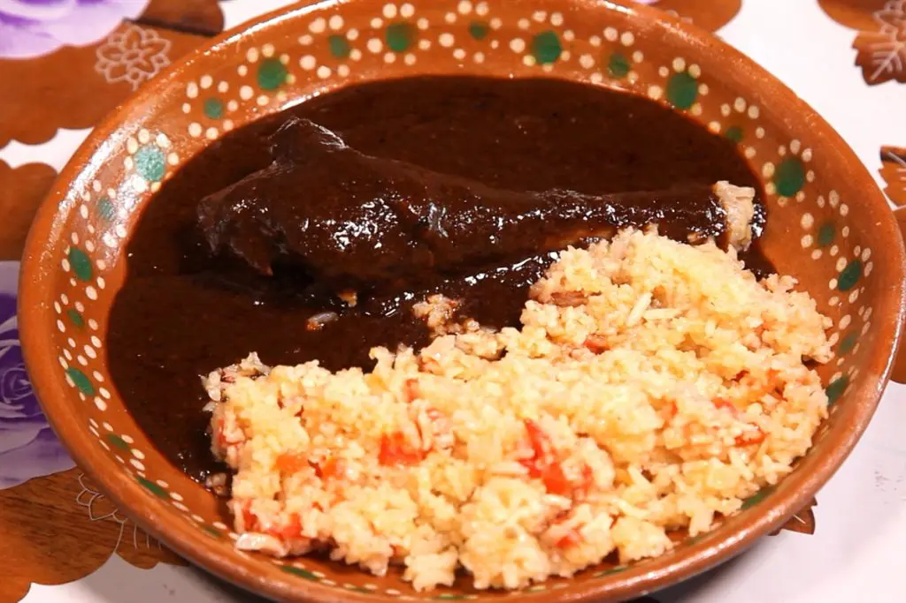
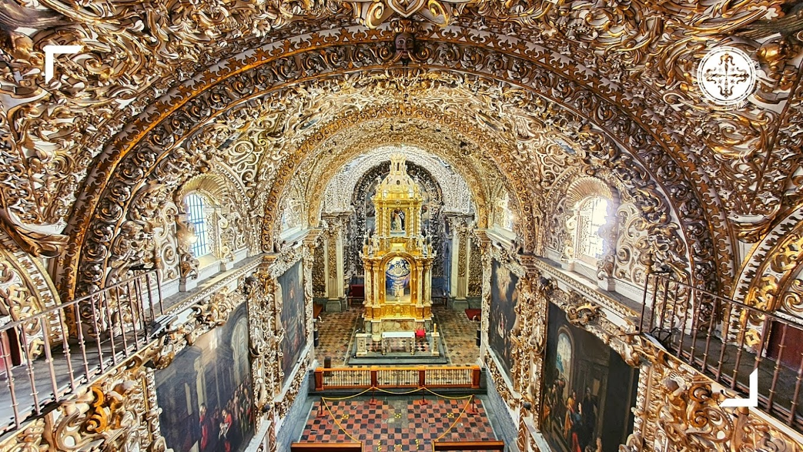

Se narra que los aztecas que preparaban para los grandes señores un platillo complejo llamado "molli", que significa salsa. Los primeros moles carecieron de chocolate, por lo que no se le puede ubicar como una salsa de chocolate, su estructura es mucho más elaborada y requiere de una preparación minuciosa.El plato empleaba en sus primeras versiones carne de guajolote (pavo), chocolate (mole de guajolote) y chile.

Es una obra del siglo xvii, cumbre del barroco novohispano, fue calificada en su época como La Casa de Oro, así como la octava maravilla del mundo por fray Diego de Gorozpe, en un impreso de 1690.

Notas relevantes:
Puebla es una de las ciudades coloniales más
antigua de México y una de las más grandes, por
la inmensidad de cultura existen diversidad de
monumentos que relatan parte de su historia,
actualmente se cuenta con más de 2600 monumentos
distribuidos en toda la ciudad siendo la ciudad
con más monumentos en América.
Uno de los hechos históricos más importantes en
Puebla es la asombrosa Batalla del 5 de mayo de
1862, la intervención del ejército francés en
territorio poblano fue una de las polémicas ya
que esta batalla es considerada una de las
victorias más grandes contra uno de los ejércitos
más fuertes, pero todo esto fue gracias al clima
húmedo y lluvioso que ayudo a los mexicanos a
derrotar a este gran ejército.